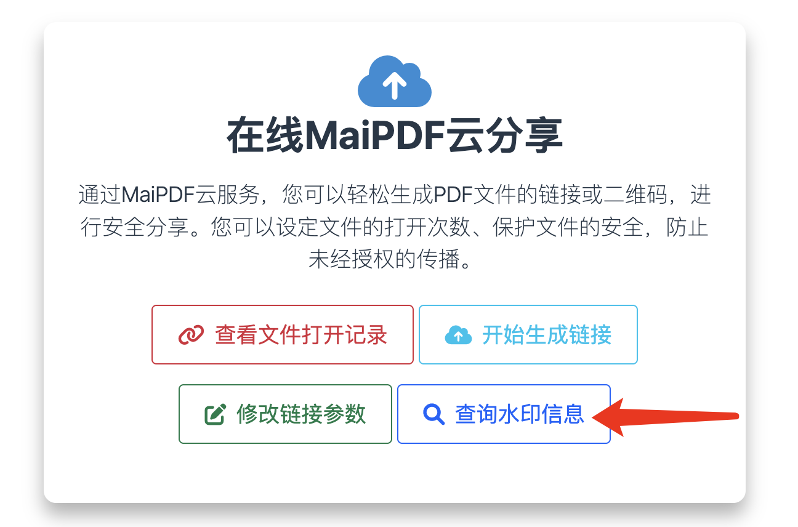

如何通过外发PDF获取访问者IP地址？
想知道谁在查看您分享的PDF文件吗？本文将详细介绍如何通过技术手段追踪PDF访问者的IP地址、访问时间和其他重要信息，帮助您更好地了解文档的传播情况。
流程图
交互式流程图
flowchart TD
A[开始] --> B[处理步骤]
B --> C[收集数据]
C --> D[分析结果]
D --> E[完成]
style A fill:#667eea,stroke:#764ba2,stroke-width:2px,color:#fff
style E fill:#48bb78,stroke:#38a169,stroke-width:2px,color:#fff
🤔 为什么需要追踪PDF访问者？
常见应用场景
- 商务合作 - 了解合作伙伴是否查看了您的提案
- 求职应聘 - 确认HR是否打开了您的简历
- 学术研究 - 追踪论文或报告的阅读情况
- 法律文件 - 记录重要文件的访问证据
- 市场营销 - 分析宣传材料的传播效果

🔧 技术实现原理
方法一：智能链接追踪
将PDF文件上传到专业的追踪平台，生成带有追踪功能的智能链接。当有人点击链接时，系统会自动记录访问者信息。
工作原理：
- 上传PDF到追踪平台
- 系统生成唯一的追踪链接
- 访问者点击链接时触发追踪
- 后台记录IP地址、时间等信息

方法二：嵌入式追踪码
在PDF文件中嵌入隐藏的追踪元素，当文件被打开时自动收集访问信息。
技术特点：
- 隐蔽性强，用户不易察觉
- 可以追踪本地打开的文件
- 支持多种数据收集方式
方法三：动态水印追踪
为每个接收者生成带有唯一标识的PDF版本，通过水印信息追溯访问来源。

优势：
- 可以识别具体的泄露源头
- 提供法律证据支持
- 防止未授权传播
📊 可以获取哪些信息？
基础访问信息
- IP地址 - 访问者的网络地址
- 地理位置 - 基于IP的大致地理位置
- 访问时间 - 精确到秒的访问时间戳
- 访问次数 - 重复访问统计
高级技术信息
- 设备类型 - 手机、电脑、平板等
- 操作系统 - Windows、iOS、Android等
- 浏览器信息 - Chrome、Safari、Firefox等
- 屏幕分辨率 - 设备显示参数
- 网络运营商 - ISP提供商信息

🛠️ 具体实施步骤
⚖️ 法律和道德考量
🔒 安全和隐私保护
📈 高级应用技巧
